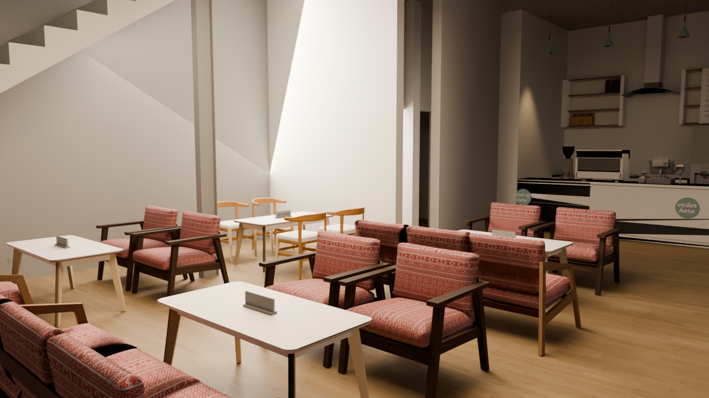

Isometrik
Menyiapkan model dan material
Model berasal dari BILLYMOON (1).skp. Model Ringan mengecilkan tekstur dan detail tanaman terpilih. Detail asli mempertahankan semua bidang hasil konversi.
Material dan garis dapat berbeda dari SketchUp. Garis atau kurva lepas tidak ikut dalam konversi. Viewer ini untuk pemeriksaan visual, bukan gambar kerja atau pengukuran konstruksi. Tabrakan memakai bagian model yang terverifikasi dan belum mencakup setiap detail. 34 daun pintu dan 4 panel geser memiliki kontrol simulasi; panel geser kembali ke posisi sumber yang sudah sebagian terbuka. Gerbang dan daun jendela yang belum terpisah tetap statis.
Mode Sinematik menambahkan bayangan lembut dan pencahayaan lingkungan. Malam memakai 4 lampu hangat pada posisi fixture teridentifikasi; intensitasnya untuk visualisasi. Resolusi 4K adalah resolusi raster, bukan tambahan detail tekstur. Preset Interior memakai kamera opsi 2, isian cahaya lokal dan koreksi sisi belakang lantai yang terverifikasi. Pantulan lantai opsional memakai cahaya tidak langsung yang dihitung sebelumnya; hanya aktif pada Interior + PBR dan tidak mengikuti gerak pintu. Mode sumber mengembalikan sisi lantai asli. Render offline ditampilkan terpisah dari jelajah 3D. Viewer tidak memakai Unreal Engine, Lumen, atau ray tracing real-time.
Kinerja bergantung pada perangkat. Di mode orbit, matikan layer yang tidak diperlukan. Jelajah menampilkan semua layer agar penghalang tetap terlihat.
Avatar bergaya blok adalah karikatur. Detail tambahan berisi konsol, sudut duduk dan bangku konsep, serta tekstur permukaan prosedural. Furnitur asli tetap dipertahankan; tambahan dapat dimatikan. Emote adalah gerak fiksi orisinal; duduk/santai berupa pose di tempat, bukan interaksi kursi.
Lettering Billymoon diambil dari geometri papan nama model sumber. bambe studio memakai wordmark sementara.
Mouse: seret untuk putar, klik kanan dan seret untuk geser, gulir untuk zoom. Sentuh: satu jari untuk putar, dua jari untuk zoom dan geser. Orbit: tombol panah untuk putar, Shift + panah untuk geser, + / − untuk zoom, Home untuk reset. Jelajah: WASD untuk berjalan, Shift untuk sprint, Space untuk lompat, F untuk terbang. Saat terbang, tahan Space untuk naik dan C untuk turun. G memainkan emote terpilih di orang ketiga. Terbang memakai cakupan tabrakan yang sama; saat dimatikan, pemain didaratkan ke lantai yang aman di bawah atau kembali ke titik masuk.

WASD / joystick · seret untuk melihat